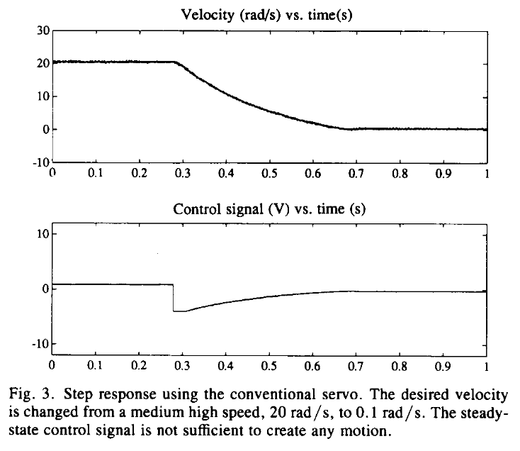
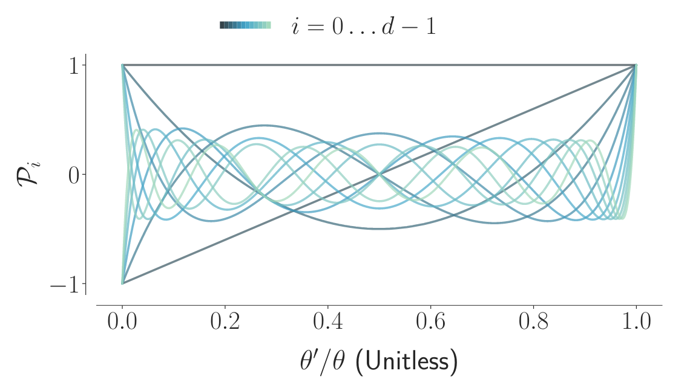

Dynamical Systems for Control
Telluride Neuromorphic Cognition Workshop 2025
Jens Egholm Pedersen
jeped@kth.se
jegp@mastodon.social
jepedersen.dk
 KTH Royal Institute of Technology
KTH Royal Institute of Technology
Caveat emptor
- Huge topic to a broad audience
- Focus on mathematical abstractions
- Biological motivation - neural focus
- Emphasis on practice and code
- Slides at jepedersen.dk - but take notes!
1. Biological motivation
Dynamical systems in nature
Central Pattern Generators (CPGs)
Locomotion: Rhythmic leg movements in walking
Breathing: Automatic respiratory rhythm
Swimming: Coordinated body undulation
Key insight: Autonomous rhythm generation without external timing

Neural oscillators
Individual neurons can act as oscillators:
- Synaptic feedback loops
- Network interactions
Coupled oscillator networks → Complex spatiotemporal patterns
 Andy Keller & Max Welling, Neural Wave Machines, 2023
Andy Keller & Max Welling, Neural Wave Machines, 2023
The Mathematical Challenge
How do we understand and control these systems?
We need mathematical tools to:
- Model the dynamics
- Predict behavior
- Design control strategies
- Establish guarantees
An organism [...] is observed in different states. This observed system is the target of the modeling activity. Its states cannot really be described by only a few observable parameters, but we pretend they can
[...]
The relationship between the actual states of the real organism and the points of the geometric model is a fiction
— Abraham and Shaw 1991
2. State Space Foundations
From Biology to Mathematics
State Space Representation
$$\dot{x} = f(x, u)$$ $$y = h(x, u)$$Where:
- x: state vector (internal variables)
- u: input/control vector
- y: output/observation vector
Constant System (No State)
Simplest case: no internal dynamics, just input-output mapping
$$y = u$$Simple 1-State System
One-dimensional exponential decay with input $$\dot{x} = -\lambda x + u$$
This system has memory - its state x evolves over time based on decay rate λ and input u.
Finding solutions
| Step 1: Start with the equation | $\frac{dx}{dt} = -\lambda x$ |
| Step 2: Separate variables | $\frac{dx}{x} = -\lambda dt$ |
| Step 3: Integrate both sides | $$\begin{align*}\int \frac{dx}{x} &= \int -\lambda dt \\ \ln|x| &= -\lambda t + C\end{align*}$$ |
| Step 4: Solve for $x$ | $$|x| = e^{-\lambda t + C} = e^C \cdot e^{-\lambda t}$$ |
Since $e^C$ is just a positive constant: $x(t) = C e^{-\lambda t}$
The Neuronal Dynamics Bible

Neuronal Dynamics: From Single Neurons to Networks and Models of Cognition
By Wulfram Gerstner, Werner M. Kistler, Richard Naud, and Liam Paninski
Available online: neuronaldynamics.epfl.chExample: Motor Control
State (x): Joint angles, velocities, muscle activations
Input (u): Motor commands from brain
Output (y): Limb position, sensory feedback
The state space captures the full "configuration" of the system
Linear Time-Invariant (LTI) Systems
A special class of systems with nice properties
$$y(t) = (x \star h)(t)$$Where $x$ is input, $t$ is time, $h$ is the impulse response
- Linear: Superposition principle applies
- Time-invariant: System parameters don't change
- Analytical solutions: The convolution integral
Observability
Can we determine the internal state from observations? (in LTI systems)($n$ linearly independent components)
Controllability
Can we steer the system to any desired state?
System is controllable if rank($\mathcal{C}$) = n
(Dual to observability)
Sensorimotor integration
Observability + controllability = closed-loop control
Where:
- K: feedback gain matrix (strength of correction)
- x: current state (observed through sensors)
- xdesired: target state (motor goal)
- ufeedforward: anticipated control (motor program)
This is the foundation of biological motor control!
Demonstration: leaky integrator
$$\tau \dot{x} = -x + I(t)$$Example: Leaky integrator
Let's analyze observability and controllability $$\begin{align*} \tau \dot{x} &= -x + u \quad \text{(dynamics)} \\ \dot{x} &= -\frac{1}{\tau}x + \frac{1}{\tau}u \\ y &= x \quad \text{(output)} \end{align*}$$State-space matrices:
- $A = -\frac{1}{\tau}$ (how state evolves)
- $B = \frac{1}{\tau}$ (how input affects state)
- $C = 1$ (how we observe the state: $y = 1 x$)
Example: Leaky integrator
State-space matrices:
- $A = -\frac{1}{\tau}$ (how state evolves)
- $B = \frac{1}{\tau}$ (how input affects state)
- $C = 1$ (how we observe the state: $y = 1 x$)
- Observability: $\mathcal{O} = [C] = [1]$ → rank = 1 ✓
- Controllability: $\mathcal{C} = [B] = [\frac{1}{\tau}]$ → rank = 1 ✓
3. Optimization & stability
Energy landscapes and optimality
Energy-based optimization
Many physical systems minimize energy functions:
Principle of least action
Nature chooses paths that minimize action
- Action S: Total "cost" of a trajectory
- Lagrangian L: Kinetic energy - potential energy
- Principle: Physical systems follow paths, $\partial S = 0$
The theoretical minimum

The Theoretical Minimum: What You Need to Know to Start Doing Physics
By Leonard Susskind and George Hrabovsky
Pontryagin's Maximum Principle
Optimal control: minimize cost subject to dynamics
- L(x,u): Running cost (energy, error, effort)
- φ(x(T)): Terminal cost (final target)
- Subject to: ẋ = f(x,u) (system dynamics)
Pontryagin's Solution Method
Transform constrained optimization into unconstrained problem
- H: Hamiltonian (augmented cost function)
- λ: Costate/adjoint variables (shadow prices)
- Optimality: $\frac{\partial H}{\partial u} = 0$ (critical point)
Lyapunov Stability Theory
Prove stability without solving differential equations
- V(x): Lyapunov function (generalized "energy")
- Positive definite: V > 0 away from equilibrium
- Non-increasing: V̇ ≤ 0 (energy dissipates)
Lyapunov Method in Practice
Finding the right energy-like function
- Physical energy: Often works for mechanical systems
- Quadratic forms: V(x) = xTPx for linear systems
- Problem: No systematic way to find V(x)
- Art: Requires intuition and experience
Combining Stability & Optimality
Pontryagin + Lyapunov → Robust optimal control
Design controllers that are:
- Optimal (minimize cost)
- Stable (bounded behavior)
- Robust (handle uncertainty)
4. Phase space and attractors
Using geometry to extract information
Phase space
The space of all possible states of a dynamical system
- Each point represents a complete system state
- Trajectories show how states evolve over time
- Dimension equals number of state variables
Phase portraits
Visual representation of system dynamics in phase space
- Vector field: Shows direction of flow at each point
- Trajectories: Solution curves starting from different initial conditions
- Nullclines: Where $\dot{x}_i = 0$
Van der Pol oscillator
Classic nonlinear oscillator with limit cycle behavior

Poles in phase space
For linear systems: ẋ = Ax, behavior determined by eigenvalues of A
- Poles (λ): Eigenvalues of matrix A
- Left half-plane: Re(λ) < 0 → Stable (decay)
- Right half-plane: Re(λ) > 0 → Unstable (growth)
- Imaginary axis: Re(λ) = 0 → Oscillatory
For non-linear systems: vector field becomes infinite (not good)
Poincaré diagram
$\text{Tr} A$ = "average tendency", $\det A$ = "shape scaling"
Lyanunov stability: orbit "stays in neighborhood"
Example: Harmonic oscillator (spring)
$$\begin{align*} \dot{x} &= A \sin ( \omega t + \phi) \\ \omega &= \sqrt{\frac{k}{m}} \quad \text{(angular frequency)} \\ \end{align*}$$
Ex: Dampened harmonic oscillator
$$ \ddot{x} + 2\gamma \dot{x} + \omega^2 x = 0 $$
Attractors
Regions in phase space that "attract" nearby trajectories
- Fixed points: $\dot{x} = 0$ (equilibrium states)
- Limit cycles: Closed periodic orbits
- Strange attractors: Chaotic, fractal structures
Van der Pol Oscillator
Classic nonlinear oscillator with limit cycle behavior
Basins of Attraction
Set of initial conditions that lead to the same attractor
- Separatrices: Boundaries between basins
- Multistability: Multiple attractors coexist
The importance of geometry
Strogatz: Nonlinear dynamics and chaos
There aught to be an easier way [than analytical solutions] ... given the system, we want to draw the trajectories and thereby extract information about the solutions
Some extra keywords
- Laplace transform & s-space: Frequency domain analysis
- Bifurcation theory: Qualitative changes in dynamics
- Poincaré maps: Geometric analysis
- Stochastic dynamics: Noisy systems
- Statistical physics: Energy-based models
Attractor networks in neural networks and biology
- Hopfield networks: Fixed-point attractor memory
- Central pattern generators: Limit cycles for rhythmic motion
- Decision circuits: Winner-take-all dynamics
- Neural avalanches: Critical dynamics near bifurcations
Example: Neuron servo
DeWeerth, Nielsen, Mead, & Åström 1991, A simple neuron servo
5. Neural Network Dynamics
Dynamics in modern AI
Adjoint Method for Backpropagation
How to compute gradients through ODE solvers efficiently
- Problem: Standard BP through ODE solver is costly
- Adjoint state $a(t)$: variable flowing "backward"
- Memory trade-off: O(1) memory
Neural ODEs
- fθ: Neural network with parameters θ
- Continuous depth: Infinite layers via integration
- Memory efficient: Adjoint method
- Adaptive computation: Error-controlled solvers
Neural ODEs ↔ Spiking Neural Networks
Bridging continuous and event-driven computation
Wunderlich & Pehle 2020, EventProp
- Leaky integrate-and-fire: ODE until spike, hybrid
- Neural ODE perspective: Continuous dynamics
- Temporal coding: Information in spike timing
Group Symmetries and Basis Functions
Exploiting symmetries through linear combination
- Group actions: Rotations, translations, scaling
- Basis functions φn: Orthogonal polynomials
- Harmonic analysis: Decompose complex functions with periodic function (sin/cos), e.g. Fourier
Legendre Polynomials
Orthogonal polynomials with optimal approximation properties
- Completeness: Any function can be expanded
- Optimality: Best polynomial approximation in $L^2$
- Recursion: Efficient computation via recurrence
Legendre Memory Units (LMUs)
Continuous-time memory with Legendre polynomials Voelker et al. 2020, Legendre Memory Units
- Sliding window: Represents history over time θ
- Optimal encoding: Legendre minimizes error
- Linear dynamics: Efficient computation!
HiPPO: High-order Polynomial Projection Operators
Optimal continuous-time memory through polynomial approximation
Gu et al. 2020, HiPPO: Recurrent Memory with Optimal Polynomial Projections- Sliding window: Maintain optimal approximation of recent history
- Polynomial basis: Project onto orthogonal polynomials (Legendre, Laguerre, etc.)
- Matrix structure: A and B matrices derived from function theory
- LMU connection: LMUs are a specific instance using Legendre polynomials
Spectral Analysis of Learning
Frequency domain reveals optimization dynamics Marchetti et al. 2024, Harmonics of learning
- Parameter oscillations: Training exhibits geometries
- Harmonic modes: Different parameters have characteristic frequencies
- Phase coupling: Coordination in updates
Spike-response model
Arbitrary neuron dynamics as composed linear kernels
Gerstner et al. 2014, Spiking Neuron Models
Covariant spiking neural networks
Geometry preserving transformations in neuromorphic computation
Pedersen et al. 2024, Covariant spiking neural networks
- Spatial and temporal scale covariance:Spatial affine + Galilean + temporal scaling
- Neural representations: Geometric structure
Geometrization of Neural Processing
From algebraic structures to computable geometries
- Manifold structure: Smooth neural state space
- Covariance: Structure-preserving maps
- Symmetry groups: Transformations as (differentiable) group actions
- Scale spaces: Differentiable representations
Bridging Biology and AI
Common principles:
- State-based computation
- Temporal dynamics
- Hierarchical processing
- Adaptive behavior
6. Summary
Bringing It All Together
Design Principles
Future Directions
- Hybrid systems: Continuous dynamics + discrete events
- Learning dynamics: Adaptive control laws
- Koopman operators: Linearize nonlinear systems
Modern SSMs Meet Biology
Exciting convergence:
- SSMs capture long-range dependencies
- Biological systems show similar properties
- We can drive the geometric point much further
- Neuromorphic hardware can implement this!
Summary
We've connected:
- Biological rhythms → Mathematical dynamics
- State space theory → Control design
- Stability analysis → Robust systems
- Neural networks → Modern AI
- Theory → Neuromorphic applications
The future of control is neuromorphic!
Resources
📚 Textbooks & Theory
Dynamics: The Geometry of Behavior (Abraham & Shaw)
Classic text on dynamical systems theory and geometric approaches
🧠 Neural Dynamics
Neuronal Dynamics (Gerstner, Kistler, Naud & Paninski)
Comprehensive online textbook on spiking neuron models and neural coding
⚙️ Simulation Tools
Nengo: Neural Engineering Framework
Python library for building large-scale neural models and neuromorphic applications
Dynamical Systems for Control
Telluride Neuromorphic Cognition Workshop 2025
Jens Egholm Pedersen
jeped@kth.se
jegp@mastodon.social
jepedersen.dk
KTH Royal Institute of Technology